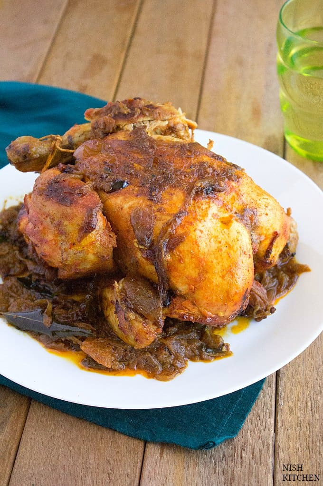

Stuffed Chicken (a.k.a Kozhi Nirachath)

Description
This spicy Malabar stuffed chicken aka kozhi nirachathu will surely surprise you.
Even though you’re removing the skin of the chicken, it’ll stay super moist. Awesome, right?
The stuffing includes hardboiled egg and spicy masala. The masala is a combination of few
common spices mixed with onions. It’s also important to shallow fry the chicken before it goes
into the oven.
Ingredients
- 1 whole chicken (approx 1kg)
MARINADE:
- Juice of half lemon
- 1 tsp ground turmeric
- 2 tbsp red chilli powder
- Salt to taste
STUFFING:
- 1 egg, hard boiled, shells removed
- 1 tbsp oil
- 1 tbsp raisins
- 1 spring curry leaves
- 1 large oniion, sliced
- 1 green chilli, sliced
- 1 tbsp minced ginger
- 1 tbsp minced garlic
- 1/2 tsp ground turmeric
- 2 tsp ground coriander
- 1 tsp red chillo powder
- Salt to tast
FRY CHICKEN:
GRAVY:
- 3 large onoions, sliced
- 1 spring of curry leaves
- 1 green chilli, slit
- 1 tsp ground turmeric
- 1 tsp ground fennel
- 2 tsp ground coriander
- 1 tsp garam masala
- 2 medium tomatoes,chopped
- Salt to taste